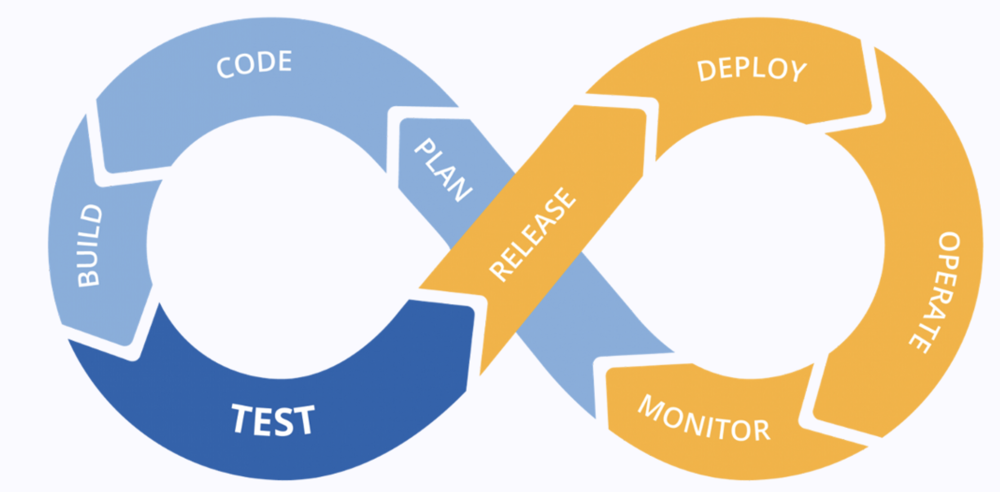
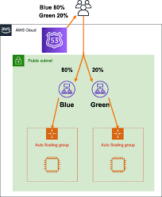
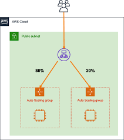
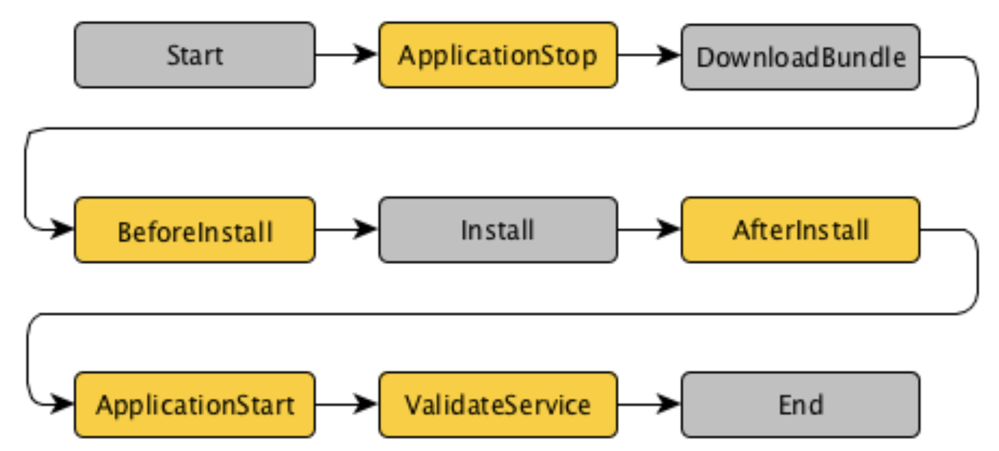
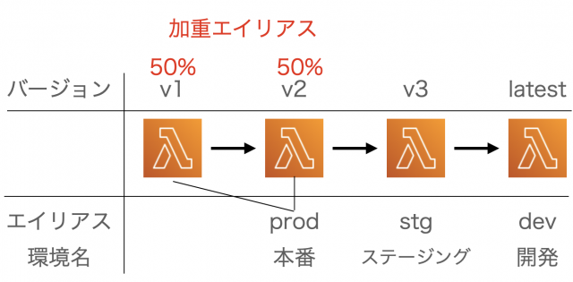
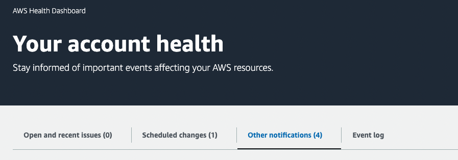
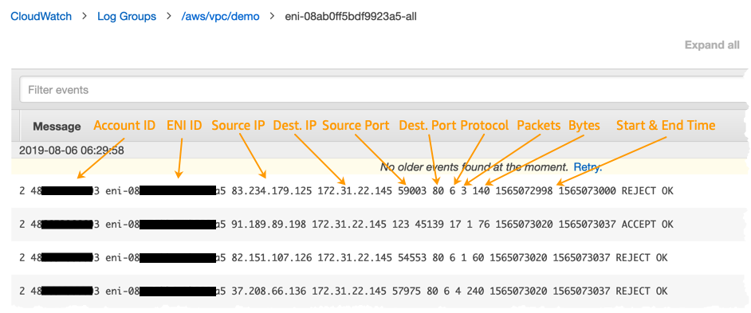
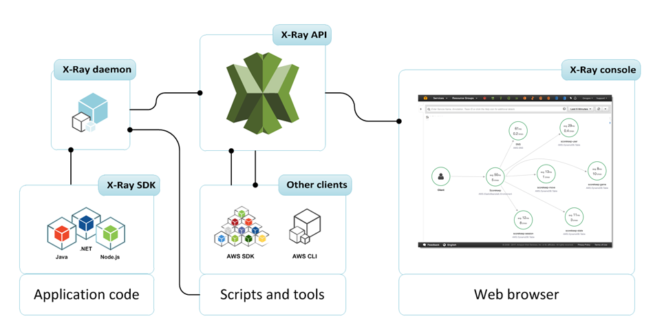

運用上の優秀性¶
AWSのサービスを利用することで、リリースプロセスを自動化することができる。 リリースプロセスの自動化は、リスクを低減し、リリース頻度を増やし、サービスの価値増大につながる。

CodeCommit¶
CodeCommitは、Gitの標準機能を提供している、AWSサービス。
リポジトリのソースコードはKMSのAWSマネージドキーでサーバーサイド暗号化される。アクセスについてはIAMPolicyで制御でき、アクセスの記録もCloudTrailで追跡できるので、セキュリティ観点なども充実している。
CodeBuild¶
CodeBuldはビルドとテストを実行するコンテナ環境を完全なマネージドで提供してくれるAWSサービス。
CodeBuildで実行されるテストやコンパイル、パッケージ作成などはbuildspec.yamlに事前定義されたコマンドにより実行される。
作成されたパッケージ(アーティファクト)はS3に格納したり、docker pushコマンドでECRにアップロードすることができる。
デプロイメントの基礎¶
デプロイについて基礎知識を整理する。 デプロイメントパータンとデプロイメント設定の関係性について整理すると、デプロイメントパターンとはデプロイに関する方針であり、この方針を実現するための具体的な手段がデプロイメント設定である。
デプロイメントパターン¶
以下の3種類が代表的なデプロイメントパターンである
ローリングデプロイ
カナリアリリース
ブルーグリーンデプロイ
ローリングデプロイ¶
指定したバッチサイズずつ、更新デプロイされるデプロイパターン。
ポイントは、同一環境内で、事前設定した割合で機械的にデプロイが進むという点。
カナリアリリース¶
新しいバージョンを、少数のサーバーやユーザーに対してデプロイを行い、様子を見てから残りもデプロイするデプロイパターン。
ポイントは、同一環境内で、小規模リリースをして問題ないことを確認してから、デプロイを進めていくという点。
ブルーグリーンデプロイ¶
現在のバージョンをブルー、新しいバージョンをグリーンとして準備して、ブルーからグリーンに切り替えるデプロイパターン。
ポイントは、別環境を準備して環境ごと切り替えるという点。
デプロイメント設定¶
以下はAWSで利用できる具体的なデプロイの方法であり、それぞれのデプロイメントパターンを実現するために利用される。
AllAtOnce
一度に全てのデプロイをする（ローリングデプロイOneAtATime
一回あたり、一つのデプロイをする（ローリングデプロイHalfAtATime
一回あたり、半分のデプロイをする（ローリングデプロイLinear10Percent5Minutes
一回あたり、決められた割合をデプロイするものを一定時間繰り返す（ローリングデプロイCanary10Percent5Minutes
最初に決められた割合のデプロイを行って、一定の時間を経てから残りをデプロイする（カナリアリリースRoute53を利用したBlueGreen
ALBを利用したBlueGreen

CodeDeploy¶
CodeDeployはEC2/AutoScaling・ECS・Lambda・オンプレへのデプロイを自動化するサービス。
デプロイするためのアプリケーションのリビジョン（アプリをインストールするためのファイル群）はS3もしくは、GitHubに保存することができる。
EC2/オンプレミス¶
デプロイメントパターンとしては、ローリングデプロイがサポートされており、デプロイ設定は以下
AllAtOnce
HalfAtATime
OneAtATime
EC2・オンプレミスにCodeDeployを利用してデプロイする場合は、EC2とオンプレ側にCodeDeployエージェントをインストールしておく必要がある。
appspec.yamlを準備しておくことで、デプロイ処理を記述された通りに実行することができ、一連のライフサイクルに応じて、追加処理を記述できる。参考サイト

ECS¶
CodeDeployのデプロイメントパターンとしては、線形のローリングデプロイとカナリアがサポートされており、デプロイ設定は以下
ECSCanary10Percent5Minutes
ECSLinear10PercentEvery1Minutes
ECSAllAtOnce
CodePipelineを利用したBlueGreenDeployの設定も可能である。
Lambda¶
Lambdaのエイリアスとバージョンを利用したデプロイをすることができる。 バージョンを付与すると変更できないイミュータブルであり、バージョンにエイリアスを付与することができ、エイリアスを利用してデプロイ設定を実現する。

CodeDeploy側でエイリアスとバージョンの紐付けを行なって、割合指定を行う。 デプロイメントパターンとしては、線形のローリングデプロイとカナリアがサポートされており、デプロイ設定は以下
LambdaCanary10Percent5Minutes
LambdaLinear10PercentEvery1Minutes
LambdaAllAtOnce
スタックのデプロイ¶
CloudFormation¶
テンプレートを利用して、AWSリソースを作成するとともに、作成されたリソースはスタックという単位で管理する。
カスタムリソース¶
Resourceとしてカスタムリソースを含めることで任意のLambdaを呼び出して実行させることができる。 利用方法としては、ResourceとしてCustomeResourceを定義し、ServiceTokenとしてLambdaのARNを指定する
AWSTemplateFormatVersion: '2010-09-09'
Resources:
MyCustomResource:
Type: Custom::MyCustomResource
Version: '1.0'
Properties:
ServiceToken: arn:aws:lambda:your-region:your-account-id:function:YourLambdaFunctionName
MyParameter: MyValue
ヘルパースクリプト¶
CFNスタックの作成時や更新時にAWSリソースの設定を行うためのツールセットとしていくつか準備がされている
cfn-init
AWS::CloudFormation::Initで定義されたデータを読み取って、スタック作成時の初期段階でcfn-initコマンドを呼び出すことで実行することができるcfn-signal
CloudForamtionに対しての作成や更新の成功失敗を通知するコマンド
これを利用することで、ウェイトコンディションリソースを利用して、作成順序を制御することなどができる。cfn-get-metadata
テンプレートファイルのメタデータを取得するために利用cfn-hup
テンプレートファイルの更新をポーリングして、変更があるとcfn-initを実行
スタックポリシー¶
スタックに含まれるリソースの変更を望まない場合に、スタックポリシーを利用することで変更を避けることができる。 以下の例では、特定のDBインスタンスに対してのUpdateを拒否している。
{
"Statement" : [
{
"Effect" : "Deny",
"Action" : "Update:*",
"Principal": "*",
"Resource" : "LogicalResourceId/MyDBInstance"
},
{
"Effect" : "Allow",
"Action" : "Update:*",
"Principal": "*",
"Resource" : "*"
}
]
}
DeletionPolicy¶
テンプレートの作成時に、DeletionPolicyを指定することで、スタックの削除時に特定リソースを保護することができる。 例えばRetainとすれば、スタックは削除されても対象のリソースは残るし、SnapShotを指定すると、スナップショットを取得してから削除する。
CDK¶
TypeScriptやPythonやJavaなどのソースコードを利用して、テンプレートを作成することができる。 オブジェクト指向やループ、条件分岐を利用して IaCを記述できるメリットがある。
Elastic Beanstalk¶
開発者が素早くAWSを利用するために、クライアントからEB CLIを利用して環境を構築することができる。
EC CLIを利用するカレントディレクトリに.ebextensionsディレクトリを作成し、configファイルを配置することで、cfn-initのようにAppのカスタマイズが可能である。
モニタリング¶
AWS Healthイベント¶
AWSアカウトに影響する機能変更や障害といったイベントをモニタリングできる
アカウント固有のイベント：使用中のリソースに影響のあるもの
パブリックイベント：利用してないサービスに関する情報
さらにイベントにもカテゴリーがある
issue(問題)
accountNortification(アカウント通知)
scheduledChange(スケジュールされた変更)

具体的な利用例としては、EC2がリタイア予定であることを通知すAWS_EC2_PERSISTENT_INSTANCE_RETIREMENT_SCHEDULEDを検知するEventBridgeを作成して、自動で、EC2のRestartを設定することもできる。
CloudWatch¶
キーとなるアップデートに関して整理する。
メトリクスダッシュボード¶
複数のアカウントにまた型tメトリクスやログ収集が可能
アラーム¶
複数のアラームのAND・OR条件を設定してアラームアクションを実行可能
Logs¶
収集したログに対して、特定の文字列の発生回数をフィルターして、メトリクスの値として扱うことができる。 また、機密情報などに関してはマスクして表示することなども可能。
VPC Flow Log¶
ENIへのインバウンド・アウトバンドトラフィックに関する情報をCloudWatchやS3に配信することができる。 バケットの中身までは保存しないが、送信元と先のIPやポート、プロトコルやバケット数、バイト数、開始終了時間など全般の情報をモニタリングすることができる。
送信に関するメタ的なデータを収集することができるが、パケットの中身までは確認できず、中身を確認したい場合はトラフィックミラーリングが必要。

トラフィックミラーリング¶
トラフィックのパケットの中身を含めて配信することができる。EC2のENIをターゲットとして配信し、そのまま分析を行うことができる。
AWS X-Ray¶
アプリケーションの潜在的なバグやボトルネックを抽出するためのサービス。
X-Ray SDKをAppに組み込むことで実行時間やリクエストの成功失敗がX-Rayに送信される。 結果をサービスマップやトレース情報にマッピングすることでアプリケーション全体のボトルネックなどを確認できる。

SIEM on Amazon OpenSearch Service¶
SIEM(Security Information and Event Management)と呼ばれる、ログの収集、一元的なモニタリング、分析が必要なシステムをAmazon OpenSearch Serviceを利用して、構築することができる。 CFNテンプレートがオープンソースとしてGitHubに公開されているので即時に利用を開始することができる。
各種サービスへのアクセスログやWAF、VPCFlowLog、Kinesis経由のログを集約してLambdaが変換してOpenSearch Serviceにロードして、可視化してくれる。
メンテナンス¶
AWS SystemManager¶
EC2やオンプレに対して、SSM Agentをインストールすると、マネージドインスタンスとして、SystemManagerから管理を行うことができる。
以下のような観点について管理することができる
SessionManager
セキュリティグループでの設定をせず、キーペアも利用せずに、SessionManagerからコマンド実行が可能
EC2 Instance Connectと呼ばれる技術でも接続できるが、こちらはSSHを利用している。SSMは特殊なためポートの解放なども不要。設定は具体的には、以下の手順を踏むSSMエージェントをインスタンスに設定
EC2インスタンスがSSMサービスにアクセスできるネットワーク設定
EC2インスタンスのRole設定してSSM Coreポリシーをアタッチ
IAMユーザーにRole設定してセッションマネージャーを使用できるポリシーをアタッチ
Run Command
事前に定義されたコマンドを実行することができる。AWSが事前準備している定番コマンド~カスタマイズも可能、パッチマネージャー
対象に対してまとめてパッチを当てることができる。パッチ適用ルールがカスタマイズすることができるので、どのインスタンスにパッチを当てて、どのインスタンスにパッチを当てないかまでベースラインによりコントロールできる、Automation
事前に設定しておいたオートメーションドキュメントを実行することができるOpt Center
運用で発生した問題の確認やステータスを一元管理可能。
S3バッチオペレーション¶
S3のオブジェクトに対して、一括した処理をサポートする
オブジェクトのコピー
アーカイブオブジェクトの復元
アクセスコントロールリストの設定。置き換え
オブジェクトロックの保持期間の設定
オブジェクトロックのリーガルホールドの有効化・かいじょ
タグの一括削除/置き換え
Lambda関数の呼び出し
AWS Config¶
AWSリソースの設定情報を収集し、変更などを記録・追跡することができるため、AWS環境内のコンプライアンスとガバナンスを確保するためのツールとして利用される。
変更などの検知もすることができるため、コンプライアンスに準拠しない場合に強制的にSystemManagerのパッチで対応することもできる。